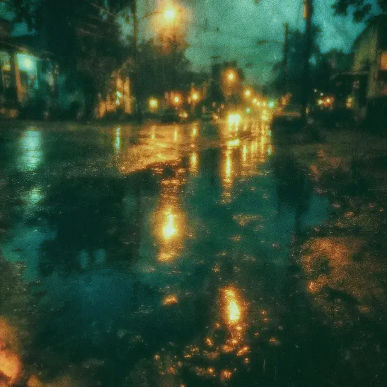
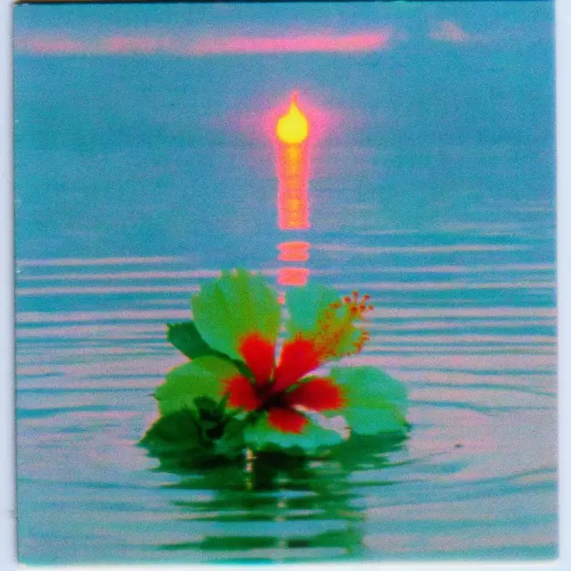
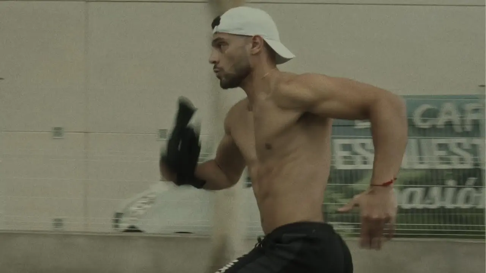
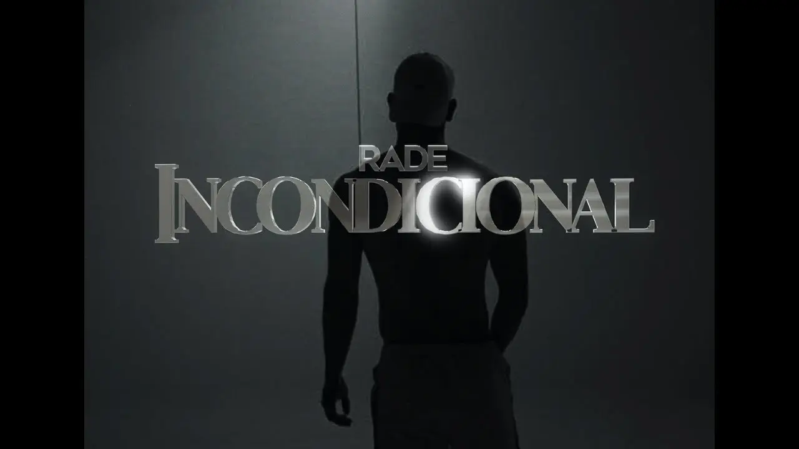
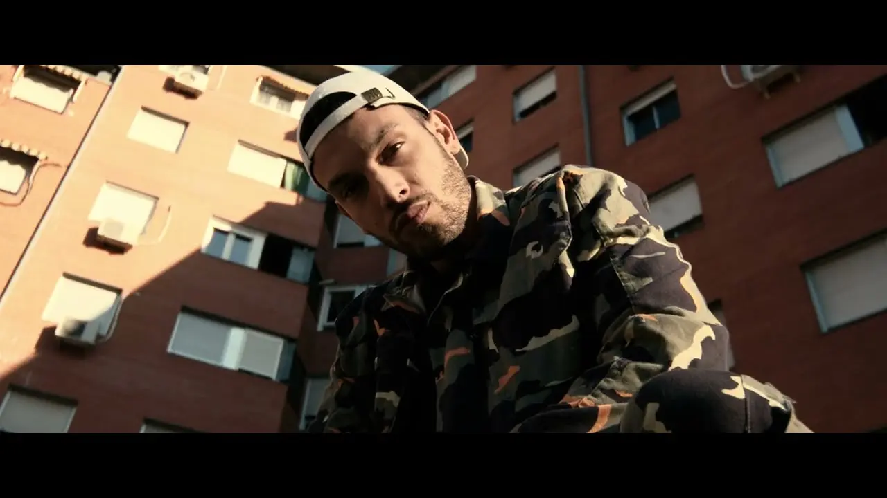
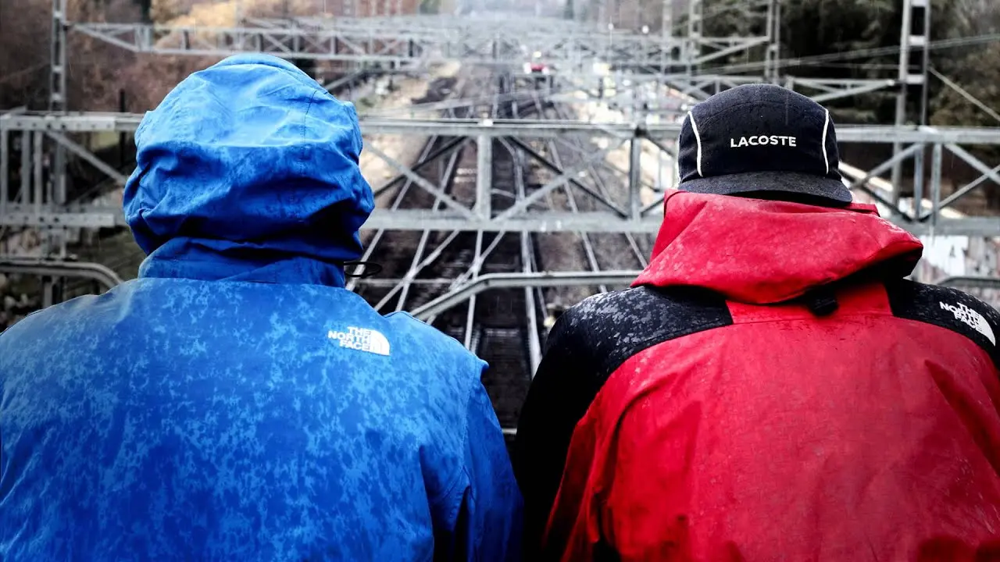
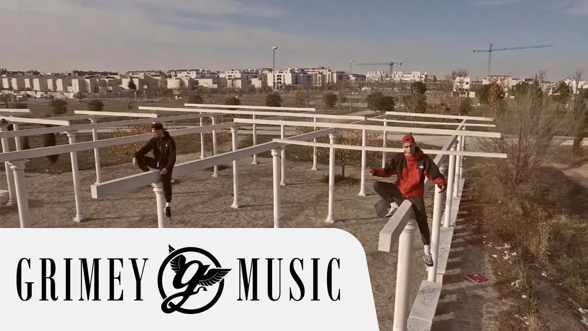
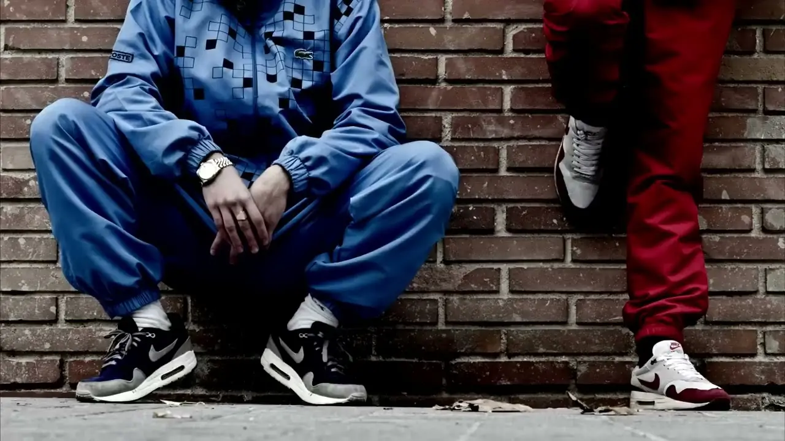
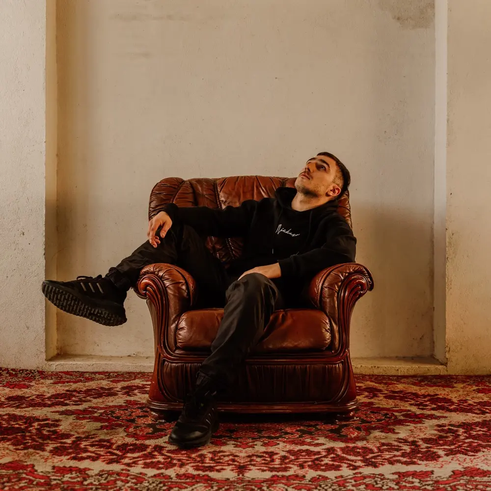

Nuevo · 24.07.2026

En Picado
El corte más reciente: dos minutos y medio de flow directo sobre una base que no da tregua.
Veinte años de rap. Un álbum, un EP y un barrio.
La mitad de Ocer y Rade. Desde 2023 firma sus propios temas: el álbum «El Brillo» (20 cortes), el EP «Contigo» y el último single, «En Picado».
Dos entregas seguidas en 2026: el single que abre el año y el EP que lo cierra. Puedes escuchar un adelanto de 30 segundos sin salir de la página.

El corte más reciente: dos minutos y medio de flow directo sobre una base que no da tregua.

Cinco cortes con el sonido más cálido de su discografía: del afro-beat de «Mafia Italiana» al pulso romántico de «Me Quedo Contigo».
Un álbum de veinte cortes, un EP, y un single cada pocas semanas. Todo publicado en su nombre y disponible en las plataformas.
Su primer álbum en solitario: veinte cortes donde cabe todo lo que ha aprendido en dos décadas de rap. Del detalle de barrio («Jordan Nuevas», «Mustang Amarillo») a la celebración («Oro y Platino», «La Sonrisa de Mi Cara»).
Se escuchan aquí seis cortes del disco. El resto, en tu plataforma.
27 temas con adelanto oficial de 30 segundos. Pulsa cualquier corte y suena: sigue escuchando mientras bajas por la página. Cada tema tiene su enlace a la ficha completa.
Previews oficiales de 30 segundos. Cada tema enlaza a su ficha completa en las plataformas.
El álbum «El Brillo» y el EP «Contigo», con una foto cada uno, y los veintiséis singles desde 2023 en la lista de abajo. Todo abre en tu plataforma.
Los 26 singles · cada uno a su ficha en tu plataforma
Javier y Rodrigo se conocieron en un colegio de Torrejón de Ardoz. En 2012 publicaron «Aliviándome», su primera maqueta, y desde entonces firmaron más de treinta lanzamientos que les llevaron a llenar salas en toda España.
Visitas acumuladas en el canal oficial de YouTube.
Primeras colaboraciones grabadas en casa y subidas a YouTube.
Maqueta «Aliviándome», trece cortes y el arranque de verdad.
«Distinto» y «Chao»: los primeros vídeos que se hicieron virales.
«Aprendí» y «Sonrío» superan los doce millones de visitas cada uno.
Giran por toda España y agotan entradas en las salas grandes.
RADE arranca su proyecto en solitario con «Rodri» y «Hoy».
Publica «El Brillo», su primer álbum en solitario: veinte cortes.
EP «Contigo» y el single «En Picado». El dúo se despide con «El Último Adiós».
El cierre de una etapa de más de una década como dúo. A partir de ahí, RADE sigue en solitario.
RADE está preparando su directo en solitario con el repertorio de «El Brillo» y el EP «Contigo». Si llevas salas, festivales o eventos, te pasamos el dossier y hablamos de fechas.
De «Aprendí» (24 millones de visitas) a «En Picado». Pulsa cualquier miniatura y se reproduce aquí mismo.






Fotogramas de sus vídeos y portadas de sus discos. Nada de banco de imágenes: todo sale de su material.

Menciones publicadas sobre Ocer y Rade, el proyecto del que sale esta etapa en solitario.
«Ocer y Rade dan conciertos en Madrid, Barcelona y Valencia en enero de 2026 con la gira de "El Último Adiós". Suman 119.000 seguidores en Instagram y 377.000 suscriptores en YouTube.»
La Ganzúa · septiembre de 2025
«Dos de los raperos más influyentes y queridos de España.»
Activate.fm · marzo de 2024
«Ocer y Rade · El Último Adiós. Barcelona, Sala Apolo 2: sold out.»
Entradas.com · enero de 2026
Para fechas, festivales, colaboraciones o prensa: el camino más rápido es un mensaje directo por Instagram. Aquí tienes todo lo demás para escucharle y seguirle.
¿Eres sala, festival o marca? Escríbenos por Instagram y te pasamos el dossier técnico y el repertorio disponible para directo.
Escucha «En Picado», el último single, y «El Brillo» completo. Si te encaja para tu sala o tu proyecto, hablamos.